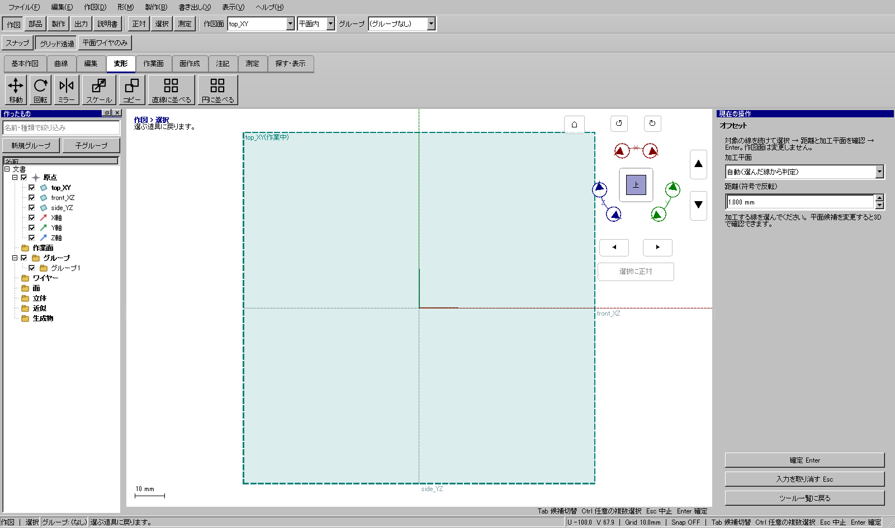
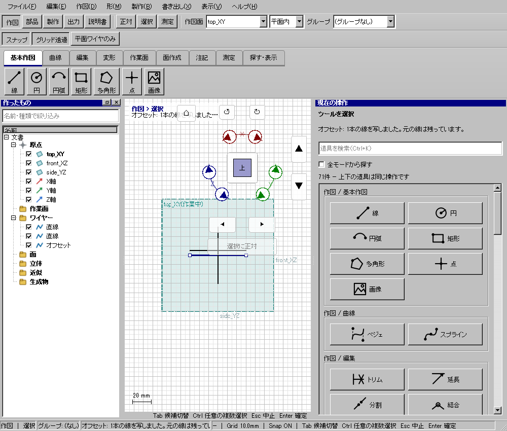
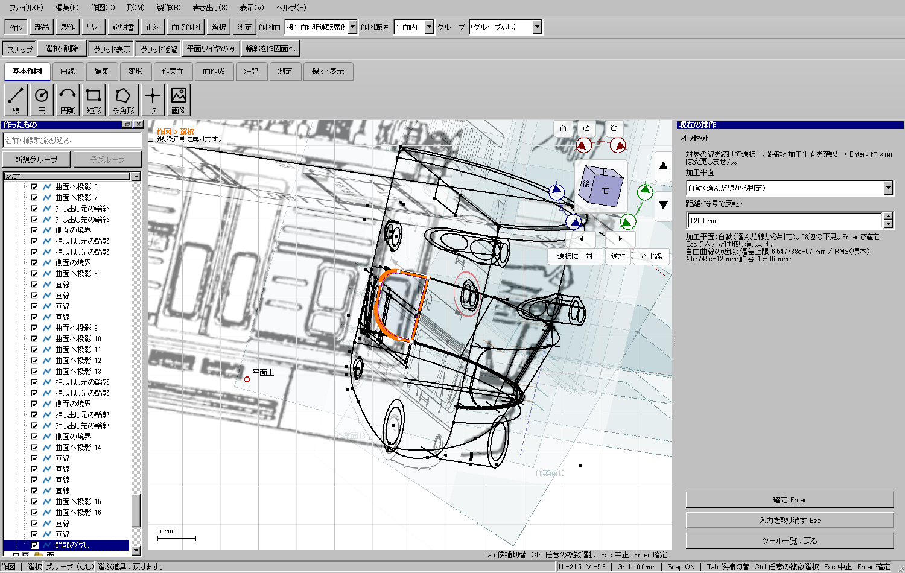
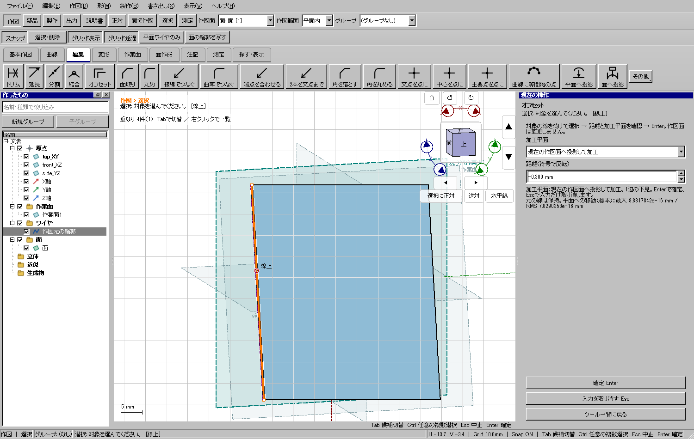

矩形の2mm外側に輪郭を作る
使う機能：オフセット
元輪郭から一定距離の別輪郭を作ります。加工平面は今回の計算用で、文書の作図面自体を移動する設定ではありません。
元の矩形を保ち、離れた位置に別輪郭を作る。
1 準備 — 元の図形から作る
20×10mmの閉じた矩形を作る。
まだ用意できていなければ、次の手順を先に行ってください。既にモデルがある場合も、例の座標・大きさ・面の向きを自分のモデルへ読み替えます。
- 幅20・高さ10mmの閉じた矩形を作る — 図形の作成から順に練習できます。
- 線・面・部品を取り違えずに選ぶ — 図形の作成から順に練習できます。
練習前にKCD2を別名保存します。数値の長さはmm、角度は度です。平面内のu/vと世界XYZを区別します。
2 使う道具を開く — 押す場所
- 作図 → 編集 → オフセット
別の入口：Ctrl+K → オフセットを検索 → 候補の用途を確認して開きます。別モードなら「全モードから探す」をオンにします。

3 操作手順 — 一つずつ進める
1 オフセットを選ぶ
この段階で確認：この操作で使う入力：20×10mmの閉じた矩形を作る
2 矩形を対象へ追加する
この段階で確認：使う対象・値：距離+2mm。反対側なら符号を反転
3 距離2mmと加工平面を指定し、向きを確認して確定する
この段階で確認：元の矩形を保ち、離れた位置に別輪郭を作る。
4 設定する欄と数値
ボタン名・欄名と、今回使う値を対応させてください。項目が出ていない場合は作り方・モードが合っているか確認し、ペイン内をスクロールします。
| 見る欄・役割 | この例の設定と意味 |
|---|---|
| 加工平面 | 矩形を含む平面 |
| 距離 | 2mm |
| 反対側 | 距離の符号を反転 |
選択の確認：役割欄の名前と3Dの強調を照合します。重なって拾いにくい時はTabで候補を替えます。全体を使う例では左一覧の要素名を選び、3Dの1辺選択と区別します。

この実画面は既存操作試験の一場面で、下の数値例の完成画像とは限りません。設定・選択の操作画面。具体的な完成例は段階写真のある作業例を参照してください。
5 確定して結果を確認
必要な入力と数値をそろえ、下見と状態欄を確認して、右ペインの作成・適用・確定ボタンを押します。Enter対応の道具はEnterでも確定できます。
元の矩形を保ち、離れた位置に別輪郭を作る。
形を作る操作では、元と結果の名前を分けて一覧で確認し、必要に応じて元を一時非表示にします。表示だけの機能では形状や要素数を変えることが目的ではありません。
6 取消・やり直し・保存
Escで未確定の入力を取り消します。道具を終えるには選択（V）か別の道具へ切り替えます。確定済みの図面変更はCtrl+Z、やり直しはCtrl+Yです。
モデルの編集正本はKCD2、説明書の編集正本はKCIです。外部へ出力するだけの機能では、出力ファイルと編集元を両方残してください。
進めない場合 — 症状から戻る場所を探す
| 起きていること | 確認して直す場所 |
|---|---|
| 内側へできた | 符号を反転して下見を比較 |
| 自由曲線が拒否される | 加工平面・距離を見直します。曲線が平面外へ出ている、縮退する、交差する、または近似誤差が許容値を超える場合は確定しません。 |
この機能の入力条件：ワイヤーを1つ以上選んでください。
計算中は処理表示を見ます。失敗が出たら、対象・入力条件を変えずに何度も押すのでなく、案内にある対象と条件を確認します。
参考画面の出典と確認範囲
試験名：オフセットは元を残し2線を交点まで合わせる。試験全体の結果：passed。画像はコマンド呼出し直後で、入力待ち・下見の場合もあります。各段階の完成証拠ではありません。
ベジェ・Bスプラインを含む輪郭を離す
- 「オフセット」を開き、3Dビューまたは左一覧から線を選びます。複数の線を続けて選べます。輪郭全体を対象にする場合は左一覧でそのワイヤを選びます。
- 距離を入力します。反対側へ離す場合は符号を変えます。平面作図では「現在の作図面へ投影して加工」が既定です。線の元位置で加工する場合は「選んだ線の平面（元の位置）」を選びます。作図面そのものを変更する設定ではありません。
- 下見の形と接続を確認します。自由曲線では「偏差上限」「RMS（標本）」「許容」を表示します。RMSは最大誤差ではありません。
- 「確定 Enter」で別のワイヤを作ります。元のワイヤと面は残り、曲線部分は曲線としてまとめて選べます。
直線・円・円弧は従来の線種を保持します。ベジェ・Bスプラインの等距離曲線は、文書の許容差内に収まるBスプラインとして近似します。表示や計算の分割を多数のワイヤには変換しません。現在の作図面へ加工する場合は、必要な投影を下見し、平面への移動量と曲線近似の偏差を表示します。元のワイヤは変形しません。元位置で加工するモードは、非平面の線を無断で平面化しません。

面や接平面を作図面にしている場合
面作成に使った元ワイヤを直接選び、距離を入れて確定できます。輪郭コピーは不要です。グリッドと同じ作図面内に結果を作ります。下見と確定は同じ投影・オフセット処理を使います。

面の輪郭から内側の開口を作る
- 「面で作図」で目的の面を選び、「正対」で作図面を正面から見ます。
- 「オフセット」を開き、その面の作成に使った元の輪郭ワイヤーを選びます。「加工平面」を「現在の作図面へ投影して加工」にします。輪郭の写しは不要です。
- 枠幅の距離を入力し、内側に下見が出るよう符号を選んで確定します。必要なら面取り・丸め等で新しい輪郭を編集します。複数の独立した辺を離した場合は端の接続も確認します。
- 曲面を選んだ場合、ここまでの結果は接平面上にあります。「面へ投影」を開き、「3Dワイヤーを面に載せる（最近点）」を選びます。新しい輪郭を元ワイヤー、目的の面を投影先として選び、「出力: ワイヤーのみ」「通常ワイヤー（編集可能）」で下見して確定します。平面でも面から離れた輪郭は同じ手順で載せます。
- 「面にする」で元の外形と、目的の面に載せた内側の閉じた輪郭を選びます。3Dで一部分だけを選んだ場合は、右の「選んだワイヤー全体を使う」で全輪郭を使うか確認します。穴が空いた下見を確認して確定します。
新しい穴付き面と元の面は別の要素です。穴の表示を確認するときは、穴を塞いで見せている元の面を非表示にします。接平面上に線を描くことと、元の曲面上へ載せることは別の操作です。